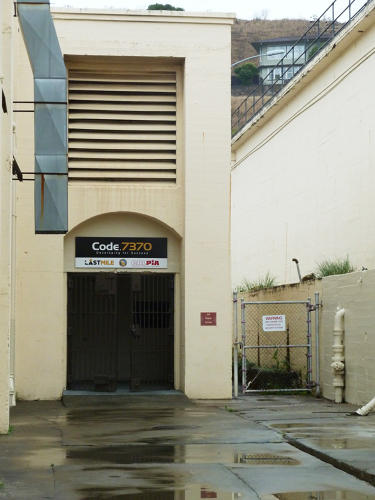
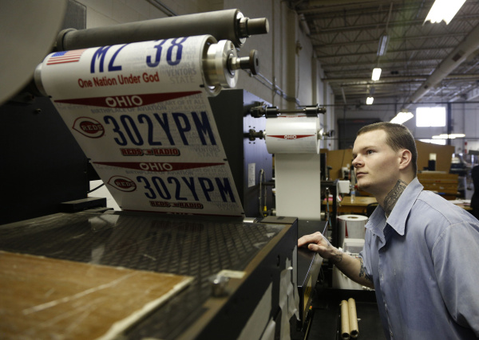
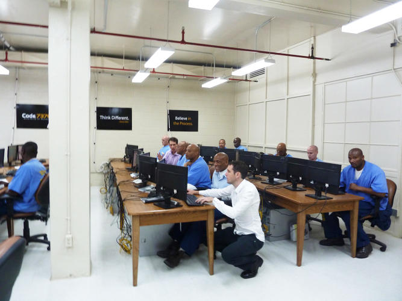
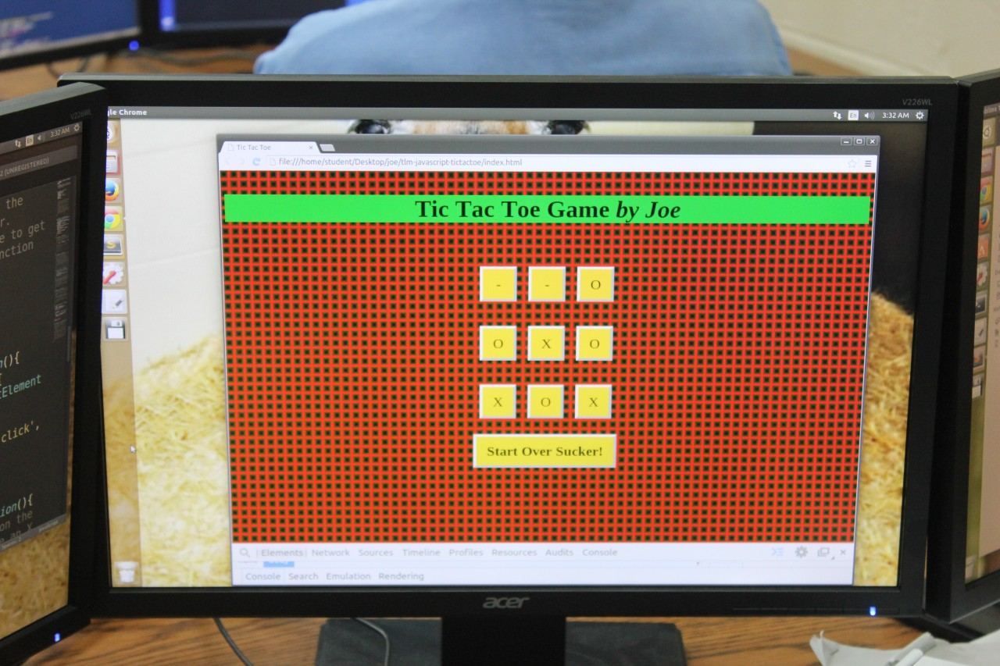
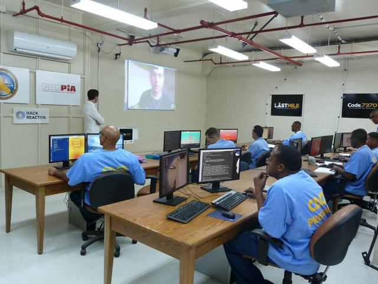

CSC 350
Final Project
Isaac Meisner
Launched in October 2014, San Quentin State Prison in California and the Last Mile Program started Code.7370, the first prison program that trains prisoners in computer programming.
This program is in partnership with Hack Reactor and the California Prison Industry Authority.
"7370" refers to the Standard Industrial Classification Code that would appear in a company's Securities and Exchange Commission filings to designate what the company does, where the code "7370" refers to Computer Programming.
Most prisoners have jobs like cooking, cleaning, clerical work, and running laundry. Some prisons have manufacturing facilities that allow prisoners to make road signs and license plates, make furniture, sew, process food, or do metal fabrication.
Meanwhile, these 18 prisoners in Code.7370 are doing something we enjoy and are paying money to learn.
I thought they were in prison?
The purpose of this program is to break the cycle of incarceration.
They claim that this program is entrepreneurship training for the prisoners so they can obtain a job when they are released from prison.
The program is 6 months and the prisoners work four days a week for eight hours learning HTML, CSS, and Javascript. 
These classes are modeled off of Hack Reactor's bootcamp and the training includes:
Their classroom contains refurbished state computers running Ubuntu that contain a small subset of the internet, which simulates a coding environment for the prisoners. All their work is saved locally on the computers. 
They take notes from lectures by software developers, mostly via Google Hangout, that volunteer their time to teach them.
What are the risks of teaching criminals how to program?
Are prisoners the best crowd of people to focus teaching to?
"If you can write great code, people don't really care about anything else." -Chris Redlitz (Founder of The Last Mile)
Programming is becoming more popular and will become competitive as the years go by. By the time prisoners are out of prison and have completed this program, I don't think they will be able to compete with the younger programmers earning educations in school.